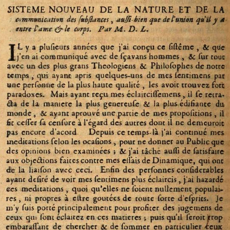

Leibniz’s New System
Thu., Feb. 27
In this class, we introduce Leibniz and discuss his New System. In this article, Leibniz brings back substantial forms in order to provide a
metaphysical foundation for mechanical philosophy while improving upon atomist and Cartesian accounts of matter. The result is panorganicism: the view that
everything in nature consists entirely of naturally immortal organisms at smaller and smaller scales to infinity. He also proposes a new solution to the problems
of mind-body union and causal communication in nature: the doctrine of pre-established harmony, which holds that each created substance causes changes only
in itself and never in any other substance, but that these changes are determined so that each substance perfectly corresponds to (and indeed representationally
‘expresses’) all other substances in the universe.
Key Concepts: Corporeal Substance, Preformationism, Panorganicism, Pre-Established Harmony
Readings:
required
Other Resources:
Early Modern Texts
Stanford Encyclopedia of Philosophy
Internet Encyclopedia of Philosophy